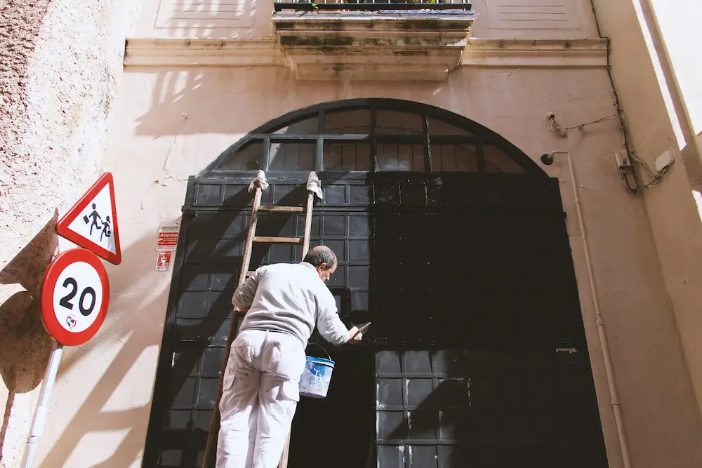

Christani's Painting:
A Legacy of Color in Brazil

Founded in 1987 in São Paulo, Brazil, Christani's Painting started as a small family business with a mission to transform homes and businesses through expert craftsmanship and vibrant colors. The company was established by Carlos Christani, a skilled painter who believed that a fresh coat of paint could do more than just renew walls—it could bring life, warmth, and personality to any space.
In the early years, Christani’s Painting focused on residential projects, gradually earning a reputation for quality and reliability. As demand grew, the company expanded its services to commercial and industrial painting, working on large-scale projects like office buildings, shopping malls, and even historical restorations.
By the 2000s, Christani's Painting had developed innovative techniques using sustainable, eco-friendly paints that were better suited to Brazil’s tropical climate. Their commitment to environmentally responsible painting solutions helped them gain recognition and establish partnerships with major brands in the construction industry.
Today, Christani’s Painting operates nationwide, with headquarters in São Paulo and regional offices in Rio de Janeiro, Curitiba, and Brasília. The company continues to innovate, offering custom finishes, textured walls, and protective coatings for homes and businesses. Through dedication to craftsmanship and customer satisfaction, Christani’s Painting has become one of Brazil’s most respected names in the painting industry.